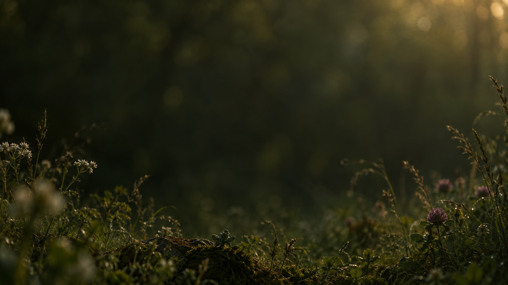
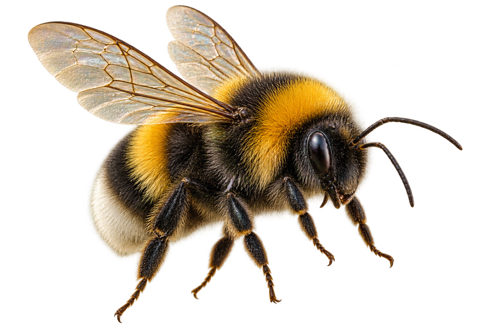

작은 존재로부터 시작되는 이야기
꽃과 꽃 사이, 생명과 생명 사이.뒤엉벌의 시선으로 세상을 만나보세요.

01 / A CLOSER LOOK
빛을 머금은 날개.꽃가루를 품는 작은 몸.하나의 연결은 여기서 시작됩니다.
02 / INTO THE LIVING WORLD
작은 비행이 이어질 때,세상은 조금 더 다채로워집니다.
THE STORY OF DWEO NGBEOL
뒤엉벌은 꽃과 꽃 사이를 오가는 작은 비행에서 시작합니다. 눈에 잘 보이지 않는 움직임이 어떻게 생명과 생명을 연결하는지, 벌의 시선으로 따라갑니다.
천천히 스크롤해 보세요.하나의 시선으로 이어지는 여정이 펼쳐집니다.